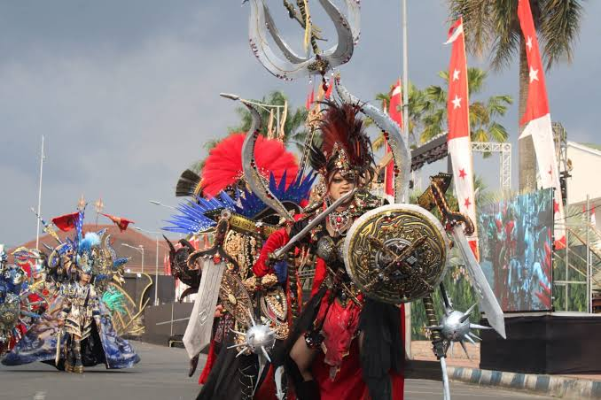
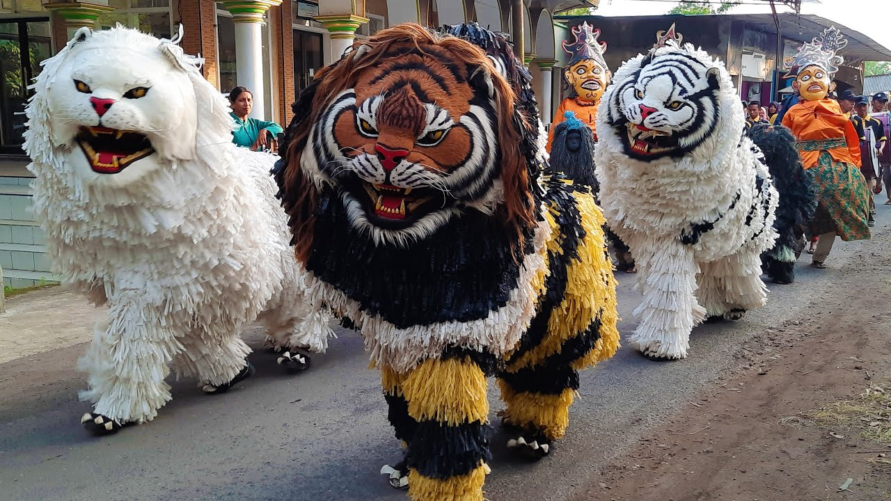
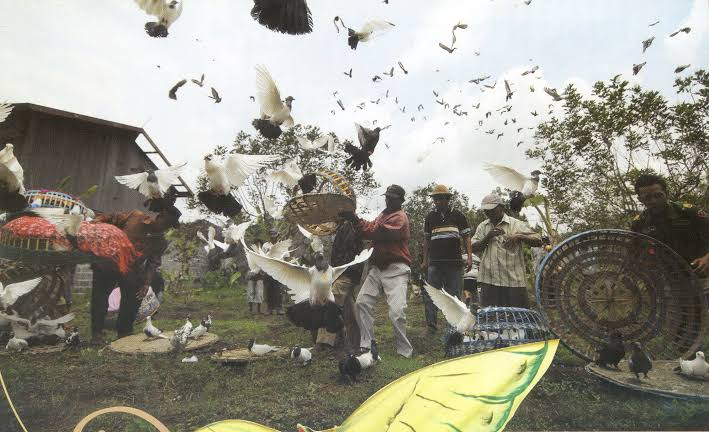
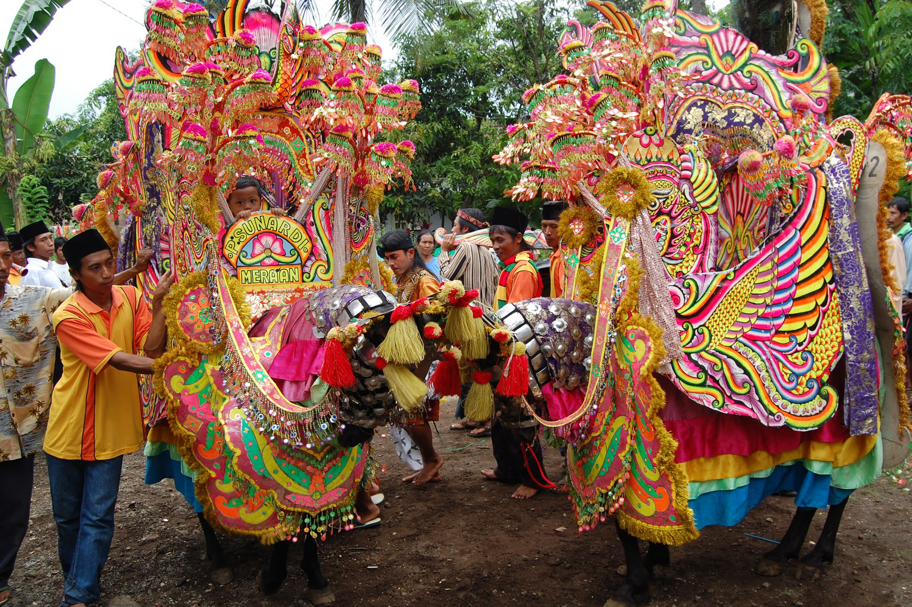

Jember Fashion Carnaval
Jember Fashion Carnaval adalah acara tahunan yang menampilkan parade kostum dan pertunjukan seni yang memukau.

Tari Lahbako
Tari Lahbako adalah tarian tradisional yang menggambarkan kehidupan para petani tembakau di Jember, Jawa Timur.

Larung Sesaji
Larung sesaji adalah tradisi menghanyutkan sajian berupa hasil bumi ke laut sebagai wujud syukur dan doa keselamatan.

Can-Macanan Kadduk
Seni pertunjukan rakyat khas Kabupaten Jember dengan sosok macan raksasa dari karung goni yang dimainkan di malam hari.

Tota'an Doro
Tradisi ini berupa pelepasan ratusan hingga ribuan burung merpati (doro) secara bersama-sama oleh para pecinta merpati sebagai ajang silaturahmi.

Jaran Kencak
Kesenian tradisional "kuda menari" yang menampilkan seekor kuda terlatih menari mengikuti irama musik tradisional dengan hiasan atau busana khas.